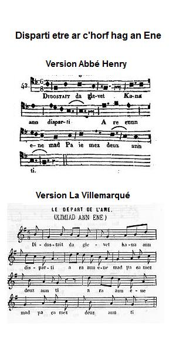
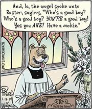

Le départ de l'âme
Soul's Departure
Dialecte de Cornouaille
|
|
|
Mélodie du Barzhaz
(Sol majeur).
Variante
Mélodie des "Kanaouennoù santel" de l' Abbé Henry
 (Cliquer pour ouvrir / fermer - Click to open / close)
Le Départ de l'âme , collecté par Bourgault-Ducoudray (mode mineur)
(Cliquer pour ouvrir / fermer - Click to open / close)
Le Départ de l'âme , collecté par Bourgault-Ducoudray (mode mineur)
| Français | English |
|---|---|
|
D'adieu de l' âme heureuse en quittant sa maison 2. Qui jette vers la terre un ultime regard, Et s'adresse à son corps gisant au lit, blafard. L' ÂME 3. Hélas ! mon corps, voici venue l'heure dernière. Il faut que je te quitte, ainsi que cette terre. 4. J'entends frapper les coups du marteau de la Mort: (1) Tes lèvres sont glacées et ta tête s'endort. 5. Ton visage est affreux. Enfoncé dans l'orbite, Ton oeil est vert. Hélas ! Il faut que je te quitte. LE CORPS 6. Si tel est mon visage, si mes yeux sont voilés, Amie, si tu dis vrai, il faut nous séparer. 7. L'être défiguré n'inspire que mépris. Comment, chargé de maux, serais-je ton ami?. 8. Toujours, la ressemblance est mère de l'amour. Puisqu'elle a disparu, que je parte à mon tour!. L' ÂME 9. Je n'éprouve, envers toi nul mépris, non, vraiment. Tu n'as jamais violé les dix commandements. 10. Mais Dieu veut mettre un terme (et louons ce Dieu bon!) A mon autorité, comme à ta sujétion. 11. Séparée de toi par la mort au coeur de pierre, Me voilà toute seule entre ciel et terre, 12. Entre terre et ciel, comme cet oiseau qui Prit de l'Arche son vol pour voir cesser la pluie. LE CORPS 13. Oui, mais vers l'Arche cet oiseau s'en retourna, Tandis que toi, jamais, ne reviendras vers moi. L' ÂME 14. Je reviendrai, vraiment. Vraiment, je le promets! Nous nous retrouverons au Jugement dernier. 15. Nous nous retrouverons, aussi vrai qu'à présent Je comparais tremblante au Premier jugement! (2) 16. Vent de galerne (3) hier, mer apaisée demain. Un jour je reviendrai te prendre par la main. 17. Quand bien même aussi lourd que le fer tu serais, Comme un aimant, au ciel, moi je t'attirerai. (4) LE CORPS 18. Quand je serai, chère âme, en la tombe étendu Et détruit par la corruption de l'humus, 19. Quand je n'aurai ni doigt, ni main, ni pied, ni bras, Comment pourras-tu donc m'élever jusqu'à toi?. L' ÂME 20. Celui qui façonna, sans moule ni matière, Le monde, a le pouvoir, ô corps, de te refaire. 21. Celui qui t'a connu quand tu n'étais pas toi, Saura bien te trouver où tu ne seras pas, 22. Nous nous verrons alors, aussi vrai qu'à présent Au tribunal cruel je me rends en tremblant. 23. Oui, je tremble. Aussi faible et frêle en cet instant Que la feuille qu'emporte au loin un coup de vent. - 24. Mais Dieu qui voit cette âme, aussitôt lui répond: - Ton châtiment, pauvre âme, ne sera pas long, 25. Car tu m'as bien servi, tant que tu fus au monde. Une part t'est donc due de mes joies sans secondes. - 26. L' âme jette un regard, montant toujours plus haut, Et voit son pauvre corps gisant sur les tréteaux. L' ÂME 27. Je veux, mon pauvre corps, d'ici te saluer. Je retourne la tête et de toi j'ai pitié. LE CORPS 28. Cesse de m'adresser ces paroles dorées. Poussière et corruption ne méritent pitié. L' ÂME 29. Non, cher corps, je t'estime aussi digne, en tout point, Que le vase en terre où l'on enclôt les parfums. LE CORPS 30. Adieu donc, ô ma vie, puisqu'il faut nous quitter. Que Dieu te mène aux lieux où tu souhaites aller. 31. Toi, toujours éveillée, tandis que moi, toujours Dormirai, souviens-toi de hâter ton retour! 32. Mais comment donc es-tu maintenant, dis-le-moi? Toi si gaie de partir, moi dans le désarroi ! L' ÂME 33. La rose remplace la ronce dans le ciel Et j'ai du miel très doux, lorsque j'avais du fiel! - 34. Viive et gaie, telle l'alouette, maintenant L' ÂME poursuit son ascension au firmament. 35. Ayant atteint son but, elle frappe à la porte, Et s'adresse à Monsieur Saint Pierre de la sorte:. L' ÂME 36. Monsieur Saint Pierre, vous qui êtes si gentil, Me recevrez-vous donc en votre paradis ? SAINT PIERRE 37. Au sein du Paradis, oui, Jésus te reçoit: Quand tu étais en vie, tu l'as reçu chez toi. - 38. L' ÂME, détourne encor la tête avant d'entrer, Et voit son pauvre corps, comme une taupinée. L' ÂME 39. - Au revoir, mon cher corps, merci ! Ne doute pas Que nous nous reverrons au val de Josaphat. (5) 40. J'entends des concerts, tels que jamais je n'en ouïs Et le jour étincelle et la nuée s'enfuit! 41. Et je fleuris au bord du ruisseau de la Vie, Tel un rosier dans le jardin du Paradis. (1) en breton "morzholig an Ankou" . Un parasite du bois qui y fait un léger bruit considéré comme annonciateur de la mort. (2) en breton "barn gentañ . C'est le "jugement particulier" dont parle le Catéchisme de l'Eglise catholique, publié en 1992: "chaque homme reçoit dans son âme sa rétribution éternelle dès sa mort en un jugement particulier: purgatoire, ciel ou enfer". Cette strophe est ajoutée par La Villemarqué au texte de l' Abbé Henry . (3) en breton "gwalarn" : nord-ouest et vent violent soufflant de cette direction. (4) dogme chrétien de la "résurrection de la chair" à la fin du monde. (5) Vallée de Josaphat: où, selon la Bible, aura lieu le Jugement dernier. |
Its song of farewell when it leaves its dwelling 2. And, soaring up, takes a last glance, down to the earth, At its poor body who lies, ailing, on its berth. SOUL 3. Alas, body, we have come to the journey's end As I give up this world, I must give you up, friend.. 4. I hear the small hammer of death that faintly hits. (1) And makes your head dizzy and icy cold your lips. 5. Your eyes are so glassy, so livid is your brow. I'm sorry for your sake. But I must leave you now. BODY 6. If my brow is livid and my eyes are glassy, Then, you are right indeed: you must leave presently. 7. I am pitifully unrecognizable, And this deformity makes me contemptible. 8. Similarity is necessary to love. You find none left in me whom away you must shove. SOUL 9. With your leave, my dear friend, you're not despised by me. Of the ten commandments you did not break any. 10. But God will - let us all praise the Lord's compassion!, - Put an end to my sway and to your subjection. 11. We are now pulled apart mercilessly by death. I am now all alone between heavens and earth, 12. Between heavens and earth, as was once the grey dove That left the Arch to look for a shore from above. BODY 13. But the grey dove was bound to the Arch to return Whereas you never will come back to whom you spurn. SOUL 14. I shall come back to you. That's a thing I swear to. On the Last Judgment's day I'll find my way to you. 15. I'll find my way to you, as true I quiver Right now, thinking of the Judgment particular. (2) 16. Trust me, my friend: After Galerne wind comes dead calm.(3) I shall come and you shall lay your palm on my palm. 17. Though you were as heavy as iron, once I get To Heaven, I'll draw you to me like a magnet. (4) BODY 18. When I am, my dear soul, stretched out in my tomb, Decomposed by the rot that every flesh consumes, 19. When I have no finger, no hand, no foot, no arm, How could you manage to take me underarm? SOUL 20. God who created the world without model or stuff, To give you back your shape will be mighty enough. 21. God who knew you in times when you didn't exist, Will be able to find you wherever you're missed. 22. We'll meet again, we will, as true as, at present, I go to the terrible God's court for judgment! 23. As true as I quiver, alas, as weak and frail, As the leaf that is blown off by a sudden gale. - 24. But God has heard the soul and hastens to respond: - Cheer up, O my dear soul, you shall not ail for long. 25. You have served me well when you were a human wight And now you shall partake in my endless delight. - 26. Soaring up, the soul gives a last look downwards And sees the poor body lying on the trestles. SOUL 27. Good day to you, body, good day to you I say. Looking back at you, I feel for you great pity. BODY 28. Enough, O soul, of all these fair, gilt-edged words! Dust and decay cannot be your compassion worth! SOUL 29. I don't agree with you, body, as worth you are, - Since it encloses scents -, as the earthenware jar. BODY 30. Farewell, then, O my life! Farewell, since you depart. God help you to go where you want with all your heart. 31. You'll be always awake, I'll sleep, alas! Don't spurn Me, please! And bring forward the time of your return! 32. But how do you do? Please tell me exactly! You are so pleased to leave. I'm so melancholy! SOUL 33. I swapped bramble branches for a charming posy And the sourest gall for the most mellow honey. - 34. Then joyful and alert like a skylark, the soul Rises up, rises up to its heavenly goal. 35. And once it has reached it, it knocks at the shutter, Requests entry from Saint Peter, the door keeper. SOUL 36. O my Lord Saint Peter, who are so good-hearted, Shall I in Jesus' paradise be admitted? SAINT PETER 37. Yes, you shall be welcome in Jesus' paradise Because, on the earth, you have welcomed Him likewise. - 38. The soul, on entering, bends its head deeper still And perceives its body, inert like a molehill. SOUL 39. Good bye, body, Thank you. And we shall, for all that, See us again in the Valley of Josaphat.! (5) 40. I hear sweet choirs of praise I never heard before. The clouds have flown away. Dazzling daylight, galore! 41. Look, I am flourishing. Like a rose bush I rise Near the brook of Life in the yard of Paradise. (1) in Breton "morzholig an Ankou" . A wood parasite producing a faint noise considered a harbinger of death. (2) in Breton "barn gentañ . It is the "particular judgment" thus described in the Catechism of the Roman Catholic Church, published in 1992: "Every man receives in his soul his eternal reward as soon as he dies, in a particular judgment: purgatory, heaven, oe hell". This stanza was added by La Villemarqué to the text of Abbé Henry . (3) in Breton "gwalarn" : North-west and violent gale blowing from that direction. (4) Christian dogma of the "Resurrection of the Flesh" on Doomsday. (5) Valley of Josaphat: where, according to the Bible, the Last Judgment will take place. |
(Texte Breton Text)

|
L'âme et le corps
Dialogue entre l'âme et le corps au moment de leur séparation. Ils se reverront à la fin des temps...Un sujet souvent traité, autrefois, par les poêtes populaires bretons. Ce chant figure parmi les 160 "Kanaouennoù santel" (Cantiques) publiés par l' Abbé Jean-Guillaume Henry (1803-1880) pour le diocèse de Quimper en 1842, avec une préface de La Villemarqué. Son authenticité n'a pas été contestée par les détracteurs du Barzhaz. La Villemarqué lui attribue une haute antiquité car, dans l'édition de 1867, il développe la note qui lui fait suite en y ajoutant l'explication relative au "petit marteau de la mort" (cf. ci-dessus), complétée comme suit: "Un bénédictin de Quimperlé, nommé Guillaume Aline, qui vivait en 1476, a fait disparaître, y voyant des superstitions, ces prétendues taches dans une version qu'il a remaniée et embellie à sa manière". L'auteur de Barzhaz lui-même avait ajouté dans ses commentaires, une de ces supertitions incriminées: (Cf. Carnet 3, p. 30: l'alouette dit "jamez na bec'hin"...) "Les paysans bretons se figurent que l'âme monte eu ciel sous la forme d'un oiseau. Comme je suivais un jour de l'oeil une alouette qui s'élevait en chantant dans les airs, un vieux laboureur ... s'arrêta...et me regarda en silence. - ...Je parie que vous ne comprenez pas sa chanson? - Je l'avouai. - Eh bien...voici ce qu'elle chante: Per, digor an nor din! Birviken na bec'hin Na bec'hin, na bec'hin! "Saint Pierre, ouvre-moi; je ne pécherai plus jamais, plus jamais, plus jamais!" - Nous allons voir si on lui ouvre - continua le paysan. Au bout de quelques minutes, comme l'oiseau descendait, il s'écria: - Non! elle a trop péché. Voyez comme elle est de mauvaise humeur! L'entendez-vous la méchante, l' endurcie? Pec'hin, pec'hin! "Je pécherai, je pécherai!" Cette anecdote illustre parfaitement les qualités d'écoute de La Villemarqué, qui en firent un des meilleurs collecteurs de la tradition orale bretonne, même s'il n'en fut pas le meilleur interprête. La théologie des feuilles volantes Les "disputes" à caractère souvent théologique telles que ce chant, constituaient un fonds auquel les imprimeurs de chant de colportage puisaient volontiers. La Villemarqué sans doute aussi, mais il ne le reconnaît jamais, comme il est indiqué à propos du chant An tri maleurus , même lorsqu'il existe de fortes présomptions dans ce sens (cf. aussi Le chant des pauvres ). Il avait cependant le souci de ne pas surcharger son ouvrage avec de tels chants didactiques. On trouve dans le premier carnet de Keransquer, p.14, quatre lignes d'un chant qu'il a visiblement jugé inutile d'exploiter: "Didostait amañ, pec'herien, labourerien sul ha gouel Ha me a ziskouezi d'eoch-hu pegen bras eo ar pec'hed, P'ema difennet gant Doue labour d'ar zul ha d'ar gouel. Hemañ voa un den maleüruz demeus an eskopti [Gwened?]" "Approchez ici, pécheurs, qui travaillez dimanches et fêtes! Et je vous montrerai combien votre péché est grand, Puisqu'il est défendu par Dieu de travailler dimanches et fêtes. Celui-ci était un misérable de l'évêché de [Vannes]..." Outre les disputes théologiques, d'autres dialogues opposaient des professions, des tempéraments, des régions (le Léon et la Cornouaille,etc.) et ils semblaient aussi fort prisés. Les prêtres sorciers La croyance populaire attribuait aux prêtres le pouvoir d'avoir commmerce avec les âmes du purgatoire, comme dans le chant "Un homme jeune hélas!" , collecté par le Chanoine Pérennès. La "Légende de la Mort" (1893, 1902, 1912) d'Anatole Le Braz regorge d'histoires dont le héros est un de ces prêtres sorciers. |
Soul and body
Dialogue between the soul and the body when they are to part from one another. They will meet again at the end of time... A popular topic in Breton lore. This song was published among 160 "Kanaouennoù santel" (Hymns) by Abbé Jean-Guillaume Henry (1803-1880) for the Bishopric Quimper in 1842 with a preface by La Villemarqué. Its authenticity was not questioned by the detractors of the Barzhaz. La Villemarsué ascribes to it high antiquity since, in the 1867 editition, he enlarges the note attached to it by appending the above explanation about "Death's little hammer" a small narrative: "A Benedictine monk of Quimperlé, named Guillaume Aline, who lived in 1476, has removed, as he deemed them superstitious, these alleged stains from a version he reshaped and embelished in his own way." The author of the Barzhaz himself had mentioned one of these incriminated superstitions in his own comments. (Cf. Carnet 3, p. 30: the lark says "jamez na bec'hin"...) "Breton country folks imagine that the soul rises to heaven in the form of a bird. Once I was looking at a trilling lark that was rising in the air. An old farmer... stopped... and stared silent at me: - ...I bet you don't understand its song? - I admitted that I did not. - Now, this is what it sings: Per, digor an nor din! Birviken na bec'hin Na bec'hin, na bec'hin! "Saint Peter, open the door! I'll never sin again! Never again, never again! - Let us see if she was allowed to enter - he said. After a few minutes, as the bird was flying down again, he cried: - No! It sinned too much! Listen how the bad, hardened sinner is ill-humoured! Pec'in! Pec'hin! "I shall sin, I shall sin!" This story perfectly highlights the patience and responsiveness of La Villemarqué that made of him one of the best collectors of Breton lore, even if he did not best account for it. Broadside theology The often theological "disputes", like in the piece at hand, made up a body of songs often resorted to by the printers of broadside sheets. So did La Villemarqué, very likely, though he never acknowledged it, as stated in connection with the song An tri maleurus , even if the assumption that he did is justified. (see also Le chant des pauvres ). However, he took care not to overburden his collection with that sort of didactic stuff. We find in the first Keransquer copybook, on page 14, four lines of a song which he evidently did not find worthy working out: "Didostait amañ, pec'herien, labourerien sul ha gouel Ha me a ziskouezi d'eoch-hu pegen bras eo ar pec'hed, P'ema difennet gant Doue labour d'ar zul ha d'ar gouel. Hemañ voa un den maleüruz demeus an eskopti [Gwened?]" "Come near, sinners who work on Sundays and feast days And I shall show you how big your sin is! Since it is God Himself who forbids working on these days. My song is about a miscreant from [Vannes] bishopric... Beside theological disputes, there were others in which different trades, different temperaments, different regions (Léon and Cornouaille, for instance) confronted and they were very much appreciated, too. Priests and sorcerers Folks' beliefs ascribed to priests the ability of conversing with the souls of purgatory, as recounted in the ballad "An unhappy youg man!" collected by Canon Pérennès. Anatole Le Braz's "Legend of Death" abounds in stories of that kind featuring a priest who is a sorcerer as well. |
Le texte de l'Abbé Henry
|
Disparti etre ar c'horf hag an ene
Gwerz da vezañ kanet en tiezh hepken 1. Didostait da gleved kanañ an disparti A reaz un ene mad pa yez maez d'eus an ti. AN ENE A. Red eo bremañ, Aotroù, pa fell d'Ho trugarez, Terriñ ma liammoù ha mont em librenté, Ha kuitaad ar prizon eus ma c'horf eüruz Zo bet din kompagnon em henchoù dañjeruz. REd eo, pa livirit, kuitaad ar gabined Leun a wiad-kinid gand aferoù ar bed. Er bed e oan lojet evel e Arc'h Noé, Pep surt anevaled endro din a c'hourve'e. Bremaik, evel ar goulm, me gemero ma nich Goude gounid Satan, ha distreiñ diouzh he bich. Va c'horf, evel ur vag, en-deveuz va douget Dre un avel divat hag er reier kalet. Setu me erru tost d'ar ger-gaer a Zion, Gweled a ran ar porzh a glask an anaon. Ar marv eo ar porzher a zigor ar c'hastel Pa vruzun a-benn-herr al lestr ouc'h ar roc'hell. Eno ez eus ur ster o ruilhañ livadoù A bep seurt joaiouzded, hag a ruilho atav. O kemeront ane'e ur berradig hepken E lekeer an ene eüruz da virviken. Ar bediz a zo foll o toujout ar marv, Termen eo d'an droug-holl, hor c'has a ra d'hor bro. An nor eo da vont tre er joaioù eternel, Pa na wél den Doué nemed goude mervel. Rak-se marv hetuz, likit ho tilijañs. Na vit ket diegus da zisplegañ ho lañs. Rag me hasto an taol, mar fell deoc'h pardoniñ Pa'z eo c'hwi ar vur griz etre Doue ha ni. Skuiz on ebarzh ar bed pa ouzhon e zoare, Nemed ar pez zo bet na zistro adarre Joaioù falz-danvezel a reer deomp da weled Hag ar joaioù natur a zo en neñv miret. - 2. Hag eñ d'ober ur zell, ur zellik deus an traoñ Ha da gomz ouzh e gorf oa war e wele klañv. 3. Siwazh! va c'horf, deuet eo an termen diwezhañ: Ret eo din d'az kuitaat, ha kuitaat ar bed-mañ. 4. Kleved a ran taolioù morzholig an Ankou Me vellet eo da benn, yen-sklas da vuzelloù. 5. Ken euzhus eo da zremm, ker glas da zaoulagad ; Siwazh dit-te ! va c'horf, ret eo din d'az kuitaat. AR C'HORF 6. Mar d'eo euzhus va dremm, ha glas va daoulagad, Gwir a lavarit-hu, ret eo deoc'h va c'huitaat. 7. Dispriz ha dizanav e kavit ho mignon; Karget a déchoù fall, siwazh! evel ma'z on. 8. An heñveledigezh zo mamm ar garantez ; Pa n'he c'havit ganin, em lezit a gostez. AN ENE 9. Nann, nann, va mignon kez, ned'out ket disasun Eus ar c'hourc'hemennoù n'ec'h-eus torret nikun, 10. Hogen Doue a venn, meulomp E drugarez, Reiñ fin d'am mestroni ha d'az sujedigezh. 11. Graet eo an disparti gant ar marv digar, Setu me-m'unanik tre 'n neñv hag an douar, 12. Tre 'n neñv hag an douar evel ar goulmig c'hlas A eas maez eus an arc'h da c'hout ha glav oa c'hoazh AR C'HORF 13. Hogen ar goulmig c'hlas en-dro oa distroet D'an arc'h elec'h m'oa kent, ha c'hwi na reot ket. AN ENE 14. Ober a rin avat, touiñ a rann-me dit, Benn ar varn diwezañ me'n em gavo ganit. 16. Bez fiañz, va mignon; rak goude ar gwalarn; E-teu mor-blen, neuze me bego en da zorn ; 17. Pa vefes evel houarn, pa vin-me bet en neñv, Evel ur meanig-touch me az tenno ganin. AR C'HORF 18. Pa vin-me prizonier, en ur bez astennet Ha dre vreignadurezh en douar dispennet; 19. Pa n'am bezo na biz, na dorn, na troad, na brec'h Diwezat vezo deoc'h fallout ma c'has ouzh krec'h. AN ENE 20. Neb a grouas ar bed, heb skouer na danvez, En-eveus ar c'halloud d'az ober a nevez. 21. Neb az anaveze, en amzer na oas ket, A c'hello da gavout e-lec'h na vezi ket. 22. Me 'n em gavo neuze, ker gwir ma 'z an bremañ, Dirak ar varn gentañ, siwazh! ken a grenan! 23. Ken a grenan, siwazh! ker ven ha ken dister Hag un delien fouetet gant ur barrad-amzer.- 24. - Doue dal m'her c'hlevas, Doue respont buhan: - Ai ta, ene mat, ne vi ket pell e poan. 25. Te c'heus ma zervijet, dre 'm out bet war ar bed, Ha bremañ te po lod eveus va joaousted.- 26. - Eñ d'ober ur zellik, ur zellik ouzh an traoñ, Ha gweled e gorf paour stennet war ar vaskaoñ. AN ENE 27 .- Demat dit-te, va c'horf, demat a laran dit, Distreiñ a ran en-dro, gant kalz truez ouzhit. AR C'HORF 28. - Tavit, o ene ker, gnai komzoù alaouret, Poultr ha breinadurezh n'eus koer a druez ebed. AN ENE 29. - Salokras, o va c'horf, dellezout a rez 'vat Kerkoulz hag ar pod-pri oe ennañ louzoù-mat. B. Ar c'horvoù vertuzuz evel ma oud-e bet Zo teñzorioù prizus en douar benniget. Evel ur c'hrizienn roz, lavant pe fourdiliz. E kornik ar jardin, e vezi en iliz. AR C'HORF C. Ar roz, ar fourdiliz hag ar bokedoù-ze A goll o gouennoiz hag hen c'hav adarre; Mar d'on heñvel outo, evel ma leveret, Ken eged deiz ha bloaz me vo resusitet. AN ENE D. Ya vat, ur bloavezh graet a gel liez aze Hag ar bloavezhioù all, ha mil vloaz e pep deiz Hor c'haso marteze d'ar rezurreksion; Mil vloaz dirak Doue, zo un deiz, va mignon. AR C'HORF 30. Adeo 'ta, va buhez, adeo c'hoaz pa 'z eo ret! Doue d'ho c'has d'al lec'h m'hoc'h eus c'hoant da vonet! 31. C'hwi vo dihun bepred, me, siwazh! a gousko. N'am ankounac'hit ket, més hastit an distro. 32. Mes penaos a rit-hu, livirit-hu din-me? Ken drant ouzh ma c'huitaat, ken digonfort on-me! AN ENE. 33. - Eskemmo drein garv gant rozennoù 'm eus graet Ha gant mel meurbet dous ar vestl c'hwerv meurbet. - 34. Neuze, laouen ha skañv evel un alc'hweder; Pe evel un tenn bir, e sav e-barzh an aer. 35. Evel ma oa degouet, e skoaz war an nor, Hag ouzh Aotrou Sant Per e c'houlennaz digor. 36. - O c'hwi, Aotrou sant Per, a zo karantezus, C'hwi em digemero e baradoz Jezuz. - 37. - E baradoz Jezuz e vi digemeret, Rak, dre ma oas er bed, he zigemer t'eus graet.- 38. Evel m'oa o vont tre, e zistroaz en-dro, Hag e welaz e gorf paour evel ur bern douar-gozh. 39. - Kenavo dit, va c'horf, ha da drugarekaat; Kenavo, kenavo da draonienn Jozafat. 40. Me glev ur veuleudi 'vel na glevis he far, Tizh zo war ar c'houmoul, ar gouloù deiz a bar! 41. Setu me o vleuniañ evel ur boudig roz A-hed gwazh ar Vuhez e liorzh ar baradoz!- |
Kimiad an ene
Version du Barzhaz Breizh 1. Didostait da gleved kana an disparti A ra an ene mad pa z'a maez d'eus an ti ( diou wech) . 2. Eñ a ra ur sellig, ur sellig ouzh an traoñ, Da gomz ouzh e gorf paour zo war e wele klañv. AN ENE 3. Siwazh ! deut eo, va c'horf, an termen diwezhañ : Ret eo din az kuitaat, ha kuitaat ar bed-mañ. 4. Kleved a ran taolioù morzholig an Ankou Mezevellet eo da benn, yen-sklas da vuzelloù. 5. Ken euzhus eo da zremm, ker glas da zaoulagad ; Siwazh dit-te ! va c'horf, ret eo din az kuitaat. AR C'HORF 6. Mar d'eo euzhus va dremm, ha glas va daoulagad, Gwir a lavarit-hu, ret eo deoc'h va c'huitaat. 7. Dispriz ha dizanav e kavit ho mignon; Karget a sioù fall, siwazh! evel ma'z on. 8. An heñveledigezh zo mamm ar garantez ; Pa n'he c'havit ganin, em lezit a gostez. AN ENE 9. Salokras, mignon ker, me n'ho tisprizan ket Eus ar c'hourc'hemennoù n'ho-peus hini torret, 10. Hogen Doue a venn, meulomp E drugarez, Lakaat fin d'am c'halloud ha d'ho sujedigezh. 11. Setu ni disparet gant ar marv digar, Setu me unanik tre 'n neñv hag an douar, 12. Tre 'n neñv hag an douar evel ar goulmig c'hlas A eas maez eus an arc'h da c'hout ha glav oa c'hoazh. AR C'HORF 13. Hogen ar goulmig c'hlas en-dro oa distroet D'an arc'h lec'h ma oa kent, ha c'hwi na reot ket. AN ENE 14. Ober a rin avat, touiñ a rann-me dit, Benn ar varn diwezañ me'n em gavo ganit. 15. Me'n em gavo ganit, ker gwir ma' z an bremañ Dirak ar varn gentañ, siwazh ! ken a grenan 16. Bez fisiañz, va mignon; mor-blaen goude gwalarn; Dont a ran-me neuze da begiñ en da zorn ; 17. Pa vefes 'vel houarn, pa vin-me bet en neñv, Evel ur meanig-tenn me az tenno ganin. AR C'HORF 18. Pa vin-me, ene kaezh, en ur bez astennet Ha dre vreignadurezh en douar dispennet ; 19. Pa n'am bezo na biz, na dorn, na troad, na brec'h Diwezat a vo deoc'h fallout ma c'has ouzh krec'h. AN ENE 20. Neb a grouas ar bed, heb skouer na danvez, En-eveus ar c'halloud d'az ober a nevez. 21. Neb az anaveze, en amzer na oas ket, A c'hello da gavout e-lec'h na vezi ket. 22. Ni 'n em gavo ker gwir, ker gwir ma 'z an bremañ, Dirak ar varn c'harv, siwazh ! ken a grenan ! 23. Ken a grenan, siwazh ! ken ven ha ken dister Hag an delien lammet gant ur barrad-amzer.- 24. Doue glev anezhan, Doue respont buhan ; - Ai ta, ene paour, ne vi ket pell e poan -, 25. Te 'peus ma servijet dre 'm out bet war ar bed, Ha bremañ te po lod eus-a va joausted.- 26. Eñ d'ober, o pignat, ur sell c'hoazh ouzh an traoñ, Ha gweled e gorf paour stegnet war ar varskaoñ. AN ENE 27 .- Demat dit-te, va c'horf, demat a laran dit, Distreiñ a ran en-dro, gant kalz truez ouzhit. AR C'HORF 28. - Tavit, o ene kaezh, gant komzoù alaouret, Poultr ha breignadurezh n'eus keer truez ebed. AN ENE 29. - Salokras, o va c'horf, dellezout a rez 'vat Kerkoulz hag ar pod-pri oe ennañ louzoù-mat AR C'HORF 30. Kenavo 'ta, buhez, kenavo pa 'z eo ret ! Doue d'ho c'has d'al lec'h m'hoc'h eus c'hoant da vonet 31. C'hwi vo dihun bepred, me, siwazh ! a gousko ! N'am ankounac'hit ket, hag hastit an distro. 32. Na penaos a rit-hu, lavarit-hu din-me ? Ken drant ouzh ma c'huitaat, ken digonfort on-me AN ENE. 33. - Eskemmañ drein garv gant rozennoù 'm eus graet Ha gant mel meurbet dous ur vestl c'hwerv-meurbet.- 34. Neuze, laouen ha skañv evel un alc'hweder ; An ene sav, e sav, e sav e-barzh an aer. 35. Hag evel m'eo degoue'et, skeiñ a ra war an nor, Ha d'an aotrou Sant Per hi a c'houlenn digor. AN ENE. 36. Oh ! c'hwi ' aotrou Sant Per, a zo karantezus, C'hwi am digemero e baradoz Jezuz ? SANT-PER. 37. E baradoz Jezuz e vi digemeret, Rak tra ma oas er bed He zigemer peus graet.- 38. Hag en ur vonet tre eñ a zistro en-dro, Hag a wel e gorf paour 'vel ur bern douar-gozh. AN ENE. 39. Kenavo dit, va c'horf, ha da drugarekaat ; Kenavo, kenavo da draonienn Jozafat. 40. Me glev ur veuleudi 'vel na glevis he far, Tizh zo war ar c'houmoul, ar gouloù deiz a bar ! 41. Setu me o vleuniañ evel ur boudig roz A-hed gwazh ar Vuhez e liorzh ar baradoz. |
Passages supprimés dans le Barzhaz
Monologue de L'ÂME A. Corps, il faut désormais, malgré ma gratitude, Que je rompe mes liens et aille en liberté: Tu fus le compagnon de mes vicissitudes, La geôle aussi dont je brûlais de m'évader. Tu le sais: il me faut quitter ces murs immondes Où règnent l'araignée et les soucis mondains. Dans l'arche de Noé que fut pour moi ce monde, Grouillaient autour de moi des animaux sans fin. Le nichoir s'ouvrira bientôt à la colombe. Tes pièges sont déjoués, Satan, que je vainquis. A travers les écueils cruels, les vents contraires, O corps, tel un navire, au port tu me conduis. Je l'aperçois ce port que les âmes espèrent, Aux rivages de Sion, aborde, frêle esquif! La mort est le portier qui m'ouvre le passage Quand la nef, de plein fouet, se fracasse au récif. Que vois-je? C'est un fleuve aux couleurs surhumaines Qui sans cesse déborde de félicités. Il suffit d'en prendre une gouttelette à peine Et voilà que la soif s'étanche, à tout jamais! Fol est l'effroi qu'inspire aux humains ce passage, Il met fin à nos maux, il nous ramène au port. De l'éternel bonheur ici s'ouvre la page, Car l'homme ne verra son Dieu qu'après la mort. Aussi, mort désirée, viens donc, fais diligence. Ne tarde plus, étends ton aile sur mes yeux! Je veux subir ta loi, te pardonne d'avance, Cruel obstacle entre Sa créature et Dieu. Je suis las de ce monde et de ses artifices: Car ce qui fut jadis, jamais ne reviendra. On nous fit miroiter des jouissances factices La vraie joie est au ciel, elle ne se voit pas. - ... B. Comme toi, tous les corps où la vertu repose Sur la terre bénie sont des trésors précieux, Crières de lavandes, fleurs-de-lis ou roses. Aux angles des jardins, a l'entour des saints lieux. LE CORPS C. - Les roses, fleurs-de-lis et ces fleurs que tu vantes, Leur essence perdue, la recouvrent toujours; Si je leur suis pareil, après un an d'attente, J'aurai vaincu la mort dans un an et un jour. L'ÂME D. C'est vrai, dans une année, telle que Dieu les compte: Une année de mille ans pour chaque jour, et puis La résurrection au terme de l'attente: Mille ans pour toi, un jour pour Dieu, mon bon ami. ****************************** Passages that were skipped in the Barzhaz Monologue of THE SOUL A. Though I am very much indebted to you, Sir, I am to break my bonds, regain my liberty, Leave the jail of the flesh wherein I cannot stir! My friend on hazardous wanderings, my body, You said it yourself, I must leave the closet dark Full of spider webs and of vain things of the world. I was lodged in the world as if in Noah's Ark, All sorts of animals around my feet were curled. A dove, I'll soon fly back into my pigeon hole Since Satan is vanquished and has ceased to cajole. My body, like a sea-safe ship, carried me on In spite of adverse wind and of pitiless reef. And now I am in sight of the town of Zion, And I see the harbour where all souls seek relief. Death is the attendant who will open the gate The moment the vessel will be smashed on the rock. And I saw the river in all-glittering spate Of joys that never cease, and that no dyke can lock. This moment its waters will close over my head, This moment Soul will meet happiness forever. Mundane fools only face the day they die with dread, The term of all their pains, of their failed endeavour. Beyond this gate is bliss that lasts for evermore, No one on earth saw God who did not die before. Therefore, Death, you're welcome and you must not tarry. Be quick, do not put off spreading your wings and start! To hasten the blow, I pardon you, don't worry! Cruel wall that has so long kept God and men apart! I am weary of life for I know all its faults: what happened yesterday never happens again; Rubbishy stuff only, O world, did fill your vaults Only Heaven abounds in joys that are not vain. - ... B. All virtuous bodies that lived upon a time Are precious treasures in the glebe where they are laid. A border of roses, of lavender, of thyme In the nooks of the yards and in the church walls' shade. THE BODY C. The rose, the lavender and all these kinds of flowers Will wilt away each year. Each year again they thrive. Being similar to them, as I am, empowers Me to come back to life, in a year to revive . THE SOUL D. Yes, you will, in a year, if you mean by this word A year whose each day is made of a thousand years That must still pass before resurrection occurred; A thousand years for you, for God a day, my dear. ********************* La langue des "Kanaouennoù" La Villemarqué écrivait dans la Préface (p.xxi): "La nécessité de sauver [nos cantiques] de la mutilation a frappé nos ecclésiastiques; la tâche leur revenait de droit; l'honneur de l'avoir entreprise appartient à un jeune prêtre de l'évêché de Kemper (Quimper)...[Il a su] remédier discrètement soit aux altérations introduites par la tradition ou les copistes, soit aux interpolations progressives de imprimeurs...et [les] publier dans une orthographe logique, nationale et non plus calquée sur l'orthographe française." Effectivement l'Abbé Henry respecte scrupuleusement les principes énoncés par Le Gonidec et, fait précéder ses textes de "mots bretons utilisés à bon escient dans le présent ouvrage. Ils ne sont pas tous connus des plus jeunes d'entre nous, parce qu'ils ont été volontairement ignorés par beaucoup d'auteurs qui leur ont substitué une foule de termes français". C'est ce qui est dit en breton en tête de la liste de 7 pages qui va d'"abaf" (timide) à "a-zevri" (exprès), où chaque mot est traduit en français! Elle est suivie d'un exemple: "Trugar Jezuz, klouar Mari!" (Clément Jésus! Douce Marie!); d'une explication relative à la prononciation du "w"; et de l'invitation à l'adresse des prêtres qui apprennent ces chants aux enfants, de leur expliquer ces mots difficiles et de les utiliser dans leur enseignement: "En doare-se e vefe pinvidikaet yezh ar vro" (Ainsi l'idiome national sera-t-il enrichi) . Cette préoccupation didactique est évoquée à propos du chant Fête des Petits Pâtres . Ces efforts ne satisfont pas pleinement La Villemarqué qui ajoute (p.xxi): "On pourra bien, à la vérité, relever çà et là dans ses textes quelques néologismes dont l'effet est assez semblable à celui de notes discordantes dans un morceau de musique; il eût été facile de les faire disparaître..." C'est peut-être pour illustrer cette dernière phrase que, tout en reconnaissant que "[ces néologismes] contribuent à faire des textes de M. Henry l'expression exacte de la langue bretonne telle qu'on la parle généralement aujourd'hui" (p.xxii), il a apporté dans la version du "Départ de l'âme" publiée dans le Barzhaz de 1845 un nombre considérable de modifications qui apparaissent en comparant les deux textes affichés ci contre côte à côte. On verra qu'il s'est fait théologien et a ajouté une strophe 15 qui évoque le "jugement particulier" (barn gentañ) que le cantique de l'Abbé passe sous silence. L'illustration ci-après montre en outre qu'il a également retouché la mélodie ( Version "Kanaouennoù santel ).  |
